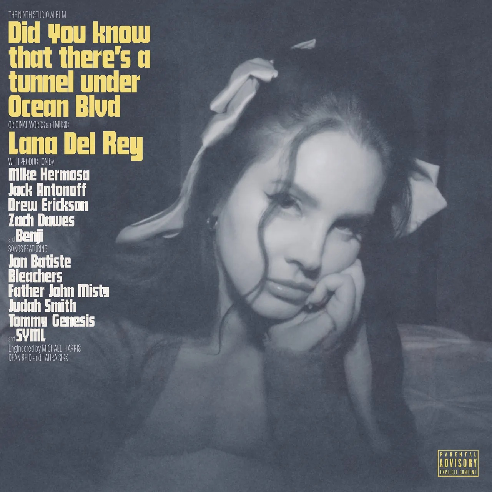

Cantante y compositora estadounidense

Lana Del Rey es el nombre artístico de Elizabeth Woolridge Grant, una cantante y compositora estadounidense nacida el 21 de junio de 1985 en Nueva York.
Su estilo mezcla pop, indie y un sonido cinematográfico y melancólico. Sus canciones más conocidas son: